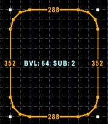
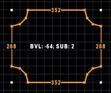

此模式让你绘制各种矩形形状。
菜单路径：模式 -> 绘制矩形。
动作类别：绘制。
默认按键：Ctrl-Shift-D。
附加动作：提高细分级别、降低细分级别、增大拐角斜切、减小拐角斜切。
你可以按下 Ctrl-Shift-D（默认按键）激活此模式。
按下模式面板上的"连续绘制"按钮，可在绘制完成后禁用自动切换回之前的编辑模式。
你可以使用模式面板或"提高/降低细分级别"和"增大/减小拐角斜切"动作来改变拐角斜切量和细节级别：

